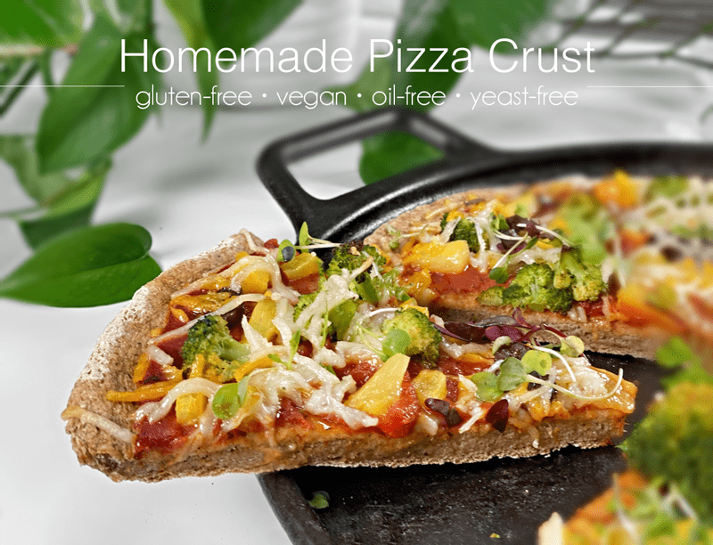
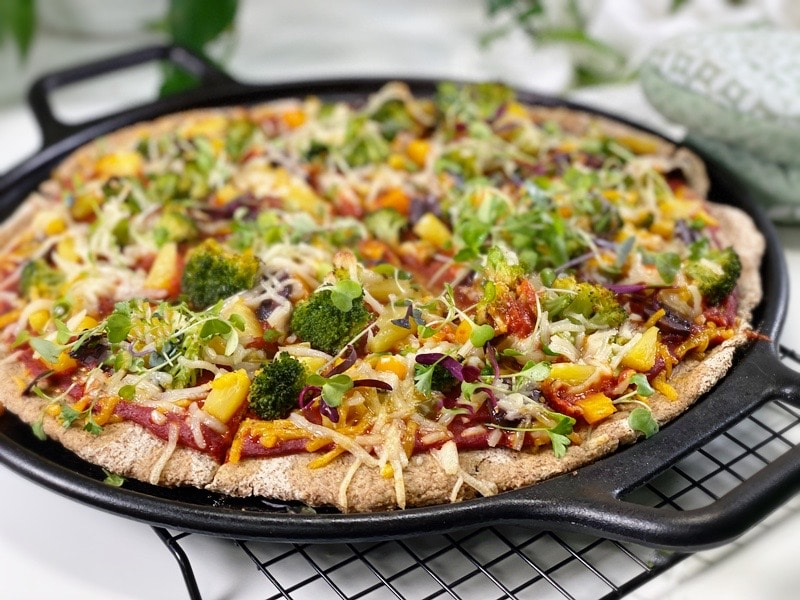
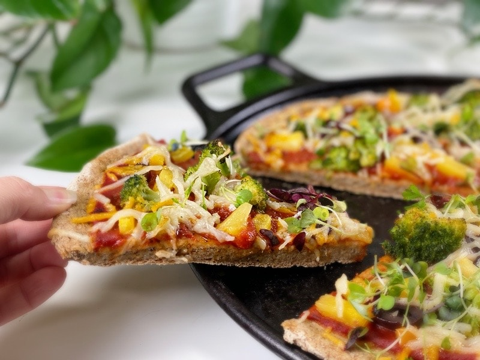
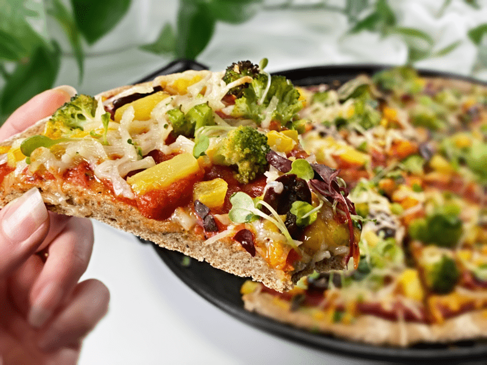

Homemade Thick Crust Pizza Dough | Baked | Gluten-Free | Vegan | Oil-Free | Yeast-Free
Pizza has a long and storied history, with the first pizza made sometime during the 1800s in Naples, Italy… to the present day, made in the comfort of my own home. For me, pizza has always been a special treat; therefore, many great memories surround this well-loved culinary delight. It’s no wonder that pizza remains one of America’s favorite foods — it’s shareable, versatile, and endlessly customizable.

Pizza sort of disappeared from my culinary vision for over ten years (after going gluten-free and vegan). But in the past year (2020), I began to dabble more and more with gluten-free, vegan, oil-free, and yeast-free crusts. To date, this crust is our all-time favorite! It is thick but not too thick, it is chewy but not doughy, it’s hardy and can handle just about any weight-load of ingredients you put on it, the bottom is firm, and the crust has a lovely crunch that makes your ears perk up with delight.

To kick off our Valentine’s weekend, I decided to make pizza for our evening dinner. Winter has FINALLY decided to come for a visit, and with it came freezing temperatures and a lot of snow. It’s an absolute winter wonderland out there. While the pizza was cooking, Bob went down to the den to start a fire. I told him we were going to have a picnic dinner. Bob and I haven’t eaten out since well before COVID (more than a year) so to spice things up, we like to have our meals in different parts of the house: the sunroom, dining room, living room, den, outside, on the floor, sitting on the couch, etc. We treat it like a special occasion and it makes us smile. Silly, huh?
There we were, snuggled up to the fire, curled up on the couch like fawns, Milo passed out at our feet, and a delicious (nutritious) pizza in hand. Ah, this is the good life. We moaned and groaned with each bite… Bob explaining it was the best pizza he has ever had. It’s no wonder I love to make food for him!

Why Is the Crust So Important?
The reason is simple: the crust lays the foundation upon which all great pizzas are built. Without crust, we’d simply be left with an assortment of vegan cheese, sauce, and toppings that would be more recognizable as a salad. Obviously, this is an exaggeration, but the point is that a crust is what ultimately ends up making a pizza work (or not), and gives its toppings their purposes.
What Makes the Perfect Pizza Crust?
Every person has their own unique definition of the perfect pizza crust, so for me to say that this is the BEST EVER pizza crust would be… inconsiderate. It’s better to explore how each aspect, like the ingredients, the dough preparation, and baking process all aid in the end result that meets your dietary needs and experience. However, I do feel safe in saying that this is my best-yet pizza crust creation (spoken with a sheepish look on my face).
Tips and Techniques
Preheating the Oven AND Pizza Stone
- If you use a pizza stone or round cast iron griddle, make sure it is very hot before placing the pizza dough on it. While the oven is preheating, slip the stone or griddle in there so it too can reach full temperature.
- This step helps set the crust, giving it that nice exterior crunch.
Pizza Pans
- Pizza Stone — Compared to using a metal baking sheet, the ceramic material of a pizza stone holds heat more evenly, and the porous surface draws water out of particularly wet areas of the dough as it cooks. When the pizza dough comes into contact with a high-temperature surface, it crisps the crust, enables quicker cooking, and promotes a more even distribution of heat. Click (here) to see what one looks like.
- Round Cast Iron Griddle — I use this when baking my pizza crusts, since it gives the same results as using a pizza stone. To purchase one, click (here).
- Baking Sheet — In my pizza-making experience, a baking sheet is something used in a pinch. Using a baking sheet will not make as crispy pizza as a pizza stone or cast iron griddle. The reason is that a baking tray doesn’t retain as much heat as a pizza stone because it’s much thinner.
Docking the Dough
- Create the perfect-looking pizza with a dough docker or a fork. Docking the dough is the process of creating small vents in the dough to prevent it from blistering and rising in large, uneven pockets during baking. It’s one of the strangest-looking tools that you might find in your kitchen, but it helps to eliminate air bubbles that can cause an unsightly look and inconsistent bake.
- I originally bought my dough docker for the purpose and creating holes in the raw crackers I was making. So, if you are on the fence about getting one, keep in mind that you can do other creative tasks with it.
Par-Bake the Dough
- I find that par-baking the pizza crust is an essential step in creating a good pizza crust. The concept behind it is to pre-bake the dough before adding your toppings. Once you’ve added all your toppings, return the pizza to the oven to finish baking. This will result in a crust that is crispy on the outside and soft on the inside.
- Par-baking is also a time-saver. You can par-bake the crust early in the day and complete the baking process for dinner. Or you can par-bake the crust and freeze it for future use.

Quick Ingredient Run-Down
- Actually, the ingredients used in this pizza crust are the same as my Everyday Bread recipe ingredients (except for the Italian seasoning). So, if you have any questions as to why and how I used the ingredients listed below, please click (here).
Just in case you are interested in the toppings I placed on our pizza, I will list them. It may seem like a curious collection of toppings, and that’s because it was. I used what I had on hand and trust me, it ALL worked together deliciously! I will start by saying that all of my ingredients are organic and will list them in the order that they went on: thick spread of pizza sauce, steamed broccoli florets (cut bite-sized), sliced kalamata olives, diced red and yellow bell peppers, pineapple, finely diced jalapenos (just enough for an occasional hit of spice), and topped with vegan cheddar and mozzarella cheese. When it was done baking, I sprinkled fresh baby greens on top… Ahhh, the pièce de résistance!
Blessings from our table to yours, amie sue
 Ingredients
Ingredients
Yields 13″ pizza dough
- 1 cup (100 g) gluten-free, rolled oats, ground
- 3/4 cup (100 g) sorghum flour
- 1/2 cup (100 g) raw hulled buckwheat, ground
- 5 Tbsp (40 g) arrowroot powder
- 2 tsp (4 g) Italian seasoning
- 1 tsp (4 g) baking powder
- 1/2 tsp (3 g) baking soda
- 1 tsp (6 g) sea salt
- 2 Tbsp (44 g) maple syrup
- 2 cups (16 oz) water
- 5 Tbsp (30 g) psyllium whole husks
Preparation
Psyllium Gel
- Quickly whisk the water and psyllium husks in a mixing bowl. It will instantly start to gel, which is to be expected. Set aside while you prepare the remaining ingredients, so it can thicken.
- Preheat the oven to 350 degrees (F).
- Line a baking sheet, pizza stone, or cast iron pan with parchment paper.
Dry Ingredients
- In the mixing bowl that we are going to knead the bread in, whisk together the oat flour, sorghum flour, buckwheat flour, arrowroot, Italian seasoning, baking soda, baking powder, and salt.
Mixing the Dough
- Add the psyllium gel and drizzle the maple syrup to the dry ingredients.
- Using either a hand mixer or a free-standing mixer with dough attachments, knead for 5 minutes (set a timer on your phone) to ensure that it gets kneaded enough (don’t we all love feeling needed?).
- Start the mixer on low until the flour is folded in, then turn it up one speed. If you start off at too high a speed, the flour will jump out of the bowl.
- While the batter is being kneaded, prepare your workstation by grabbing the parchment paper that you will use to bake with, and place it on the countertop. Sprinkle a little extra flour on the surface.
Rolling Out the Dough
- Gather the dough in your hands and gently fold it a few times as you shape it into a ball. Place it in the center of your parchment paper. Cover with a double width of plastic wrap.
- Depending on the size and shape of your pan, roll the dough until it reaches between 1/4-1/2″ thickness. The overall diameter of my crust was 13″.
- Once done rolling, remove the plastic wrap and pierce the complete top of the dough with a fork, or if you have a dough docker, use that.
- Slide the pizza crust, along with the parchment paper, onto the baking surface of choice.
Par-Baking and Baking the Pizza
- Bake on the center rack for 30 minutes, remove from the oven, and carefully remove the dough from the parchment paper, placing the crust directly onto the pan.
- Add toppings and continue to bake for another 10-20 minutes.
- The time frame is going to vary depending on the quantity and type of ingredients you added, not to mention how crisp you want the edges of the crust.
- This crust doesn’t darken much, so don’t use that to gauge when it’s done baking. Look at the ingredients–are they slightly browning? If you used cheese, is it melted to your desired preference? Those are the type of things to watch for.
- When it’s done baking, slice and enjoy!
© AmieSue.com